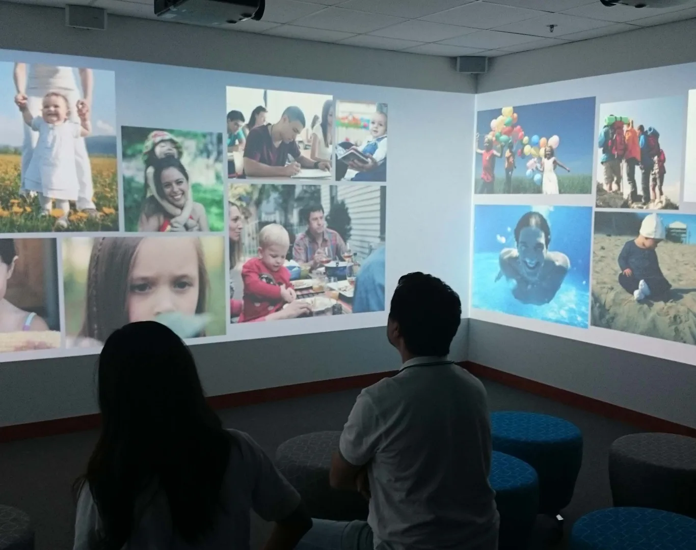

Cultura y museografía
Pediatric Nutrition Institute
Mead Johnson · México y Singapur · 2014
Mi aportación. Dirección de Optimus · producción audiovisual e interactiva

01
Contexto
Centros de divulgación e innovación dedicados a nutrición infantil.
02
Necesidad
Explicar conceptos sobre nutrición y desarrollo mediante recursos visuales e interactivos.
03
Estrategia
La aportación del equipo de Optimus combinó un audiovisual de bienvenida, mesas con reconocimiento de objetos y una producción envolvente sobre desarrollo neuronal. Mi vinculación es la dirección de la empresa que reunió estas disciplinas.
04
Impacto
Se realizaron las instalaciones de México y Singapur recogidas en el dosier.

Créditos y alcance
Destinatario: Mead Johnson. En México, contratación y colaboración con MIDE. Producción audiovisual e interactiva: Optimus Medina Riley.
¿Qué tienes entre manos?
Podemos empezar por una necesidad concreta o por una idea que aún necesita forma.